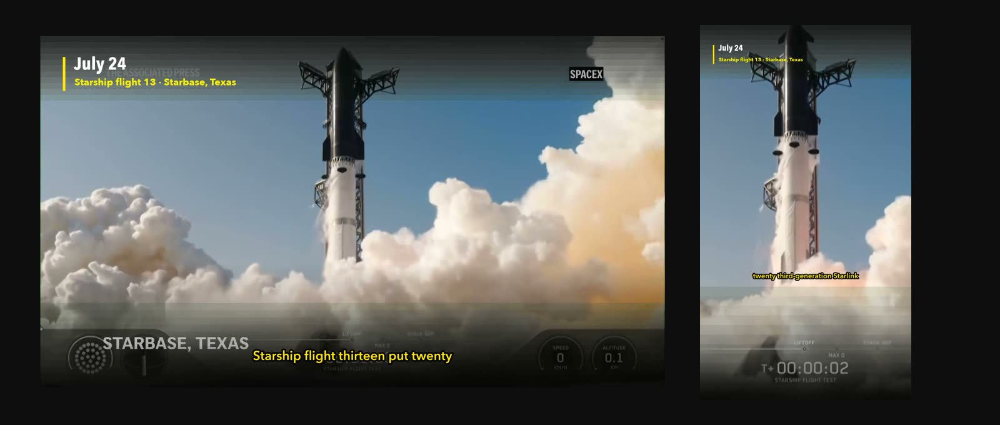
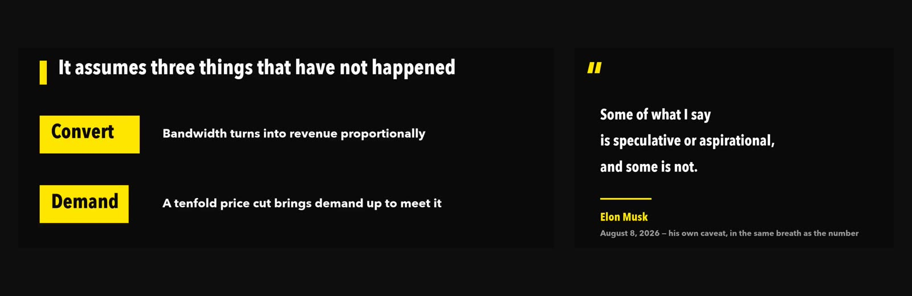
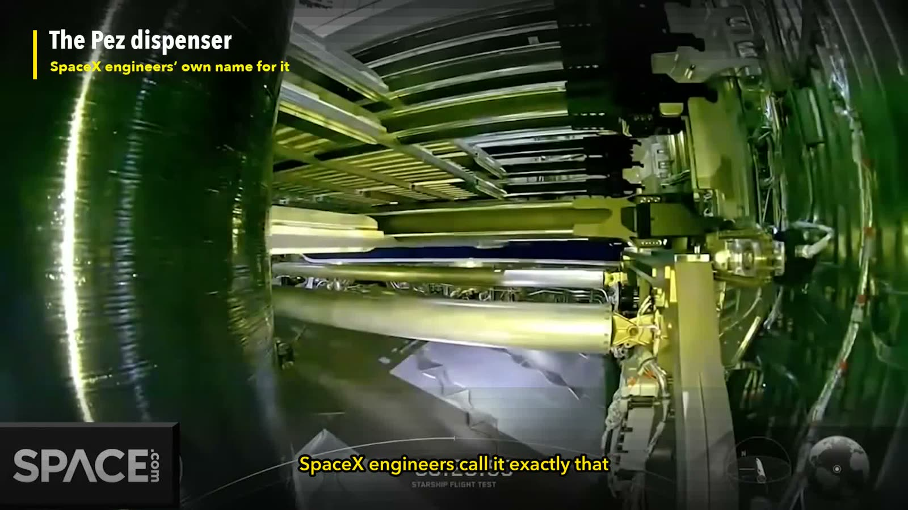
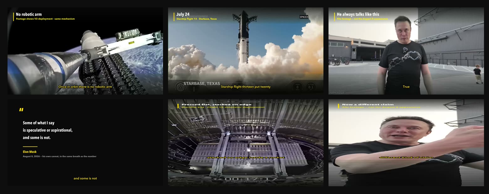
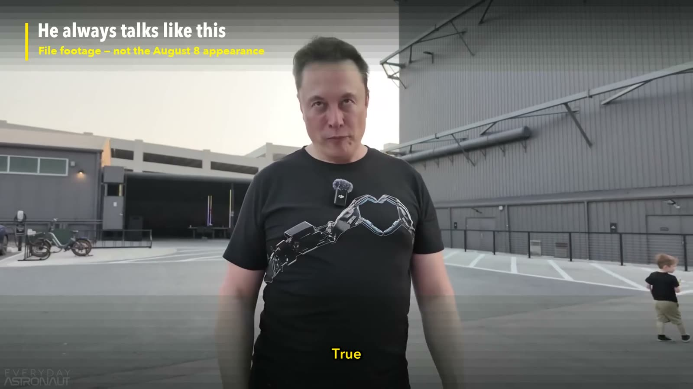

Video Pipeline
From today's news
to a finished cut.
Four agent skills that take a news beat from “what should I make today” to a rendered, captioned, publishable video — with two deliberate human checkpoints.
Not a showreel.
Two finished videos.
Both public, both produced start to finish by this pipeline in a single pass. Watch them before you decide anything — they are the honest output.

Four skills.
Eleven stages.
Each skill is correct on its own. The fourth one exists because what actually breaks is the seams between them.
topic-scan
What is worth making today
Scans your source list in priority order, verifies every URL actually resolves, scores candidates on reach, engagement, freshness and fit, and returns a ranked Top 6 with the lead flagged.
script-writing
A script you can defend
Title, frame, research, draft, sign-off. Cross-checks facts against at least three independent outlets before they reach the page, and picks one of five category templates for the cold open and closing form.
news-short-video
The finished file
TTS, sourced b-roll, data and quote cards, burned-in subtitles, QA stills, covers, distribution copy, optional upload. Nine Node scripts, three render tiers, 16:9 and 9:16.
video-pipeline
The seams
Chains the three and owns what falls between them: facts arriving unverified, a word-count line getting read aloud by the TTS, a script written to the wrong length for the platform it is going to.

Two stops.
Both yours.
You pick the title, and you sign off the script. Everything in between — the research, the scene plan, the render, the QA stills, the cover — the agent does.
Those two stay with you because the title sets the angle of the whole piece and the script carries the factual liability. This is not one-click video, and it is not trying to be.

Most of what
you are buying.
A truncated narration, a mislabelled clip, a contradictory caption: every one of these renders cleanly, plays fine, and returns exit code 0. The only way to catch them is to look — so looking is a stage, not an option.


ok ffmpeg · libfreetype present
ok yt-dlp 2026.03.17
ok fonts · style “editorial” 3 file(s) found
ok font fallback is silent confirmed
One command before you start. It exits non-zero, because several of these dependencies fail silently — a missing font makes ffmpeg substitute a face and return success.
One-time.
$15
No subscription and no runtime cost. The tools it orchestrates — ffmpeg, yt-dlp, edge-tts, Node — are free and open source, and it does not bundle them.
This is what skills are supposed to be, truly exceptional!Samuel Rose — the first review on Agensi
33 files. Four SKILL.md
definitions, nine Node scripts, reference docs, a troubleshooting guide for the
failures that pass ffprobe
cleanly, and a commercial licence.
Questions.
Is this one-click video?
No, and deliberately not. You pick the title and you sign off the script. Everything between and after those two points — research, voiceover, footage, scene plan, render, QA stills, cover, distribution copy — the agent does. Those two stay with you because the title sets the angle of the whole piece and the script carries the factual liability.
Can I use it for a different beat?
Yes. Nothing about the beat is hardcoded. Three config files, edited once: persona and positioning, your source list, and 20 to 50 filter keywords. The method is fixed; the beat is yours. Switching from EV coverage to biotech means editing those three files and nothing else.
What do I have to install, and does it cost anything to run?
Node 18+, ffmpeg with libfreetype and libx264, ffprobe, yt-dlp and edge-tts. All free and open source, no API keys and no accounts. Run the included doctor.mjs first — one command reports exactly what is missing and exits non-zero, so a broken setup cannot slip past.
Does it work in Chinese or Japanese?
Yes, with configuration. We run a Chinese channel on this pipeline — one of those cuts passed 130,000 views. Two things to set: point the plan's font at a face that has the glyphs, because ffmpeg's drawtext does not fall back when handed an explicit fontfile and will draw empty boxes while still exiting 0; and choose the matching voice, for example zh-CN-YunxiNeural. One thing to work around: the caption line-breaker splits on spaces, so in a script that has none, keep each cue inside the line limit (30 characters at 9:16, 40 at 16:9) instead of relying on it to wrap — a cue under that limit passes through untouched. What ships is set up for English: the docs, the config templates and the default voice.
Who owns the footage, and is the voice licensed?
Footage rights are yours. It fetches from public channels for commentary and citation and prefers first-party sources, but clearing a clip for commercial publication is your call. The voiceover is synthetic, generated locally by edge-tts. Every platform has a disclosure control and you should use it.
Which agents does it work with?
Any agent that reads the open SKILL.md standard — Claude Code, Cursor, Codex CLI, Gemini CLI, VS Code Copilot and others. The package is four SKILL.md definitions plus nine Node scripts; there is no runtime to install beyond the command-line tools it orchestrates.
Made by Havlek.
We build AI products end to end — and we ship our own. Video Pipeline runs a live channel, not a demo account.